I come from Warsaw, Poland but have recently moved to Cergy, France to pursue a Global Bachelor degree in Business Administration at ESSEC. My main interests are music and traveling . Currently, I hold a position of Head Communications at Polo Marco , a travel association at ESSEC.
I come from the capital of Poland and I have lived there my entire life. I love the history of my city and my favorite thing to do there is to meet my friends by the Vistula river and admire the sunsets.
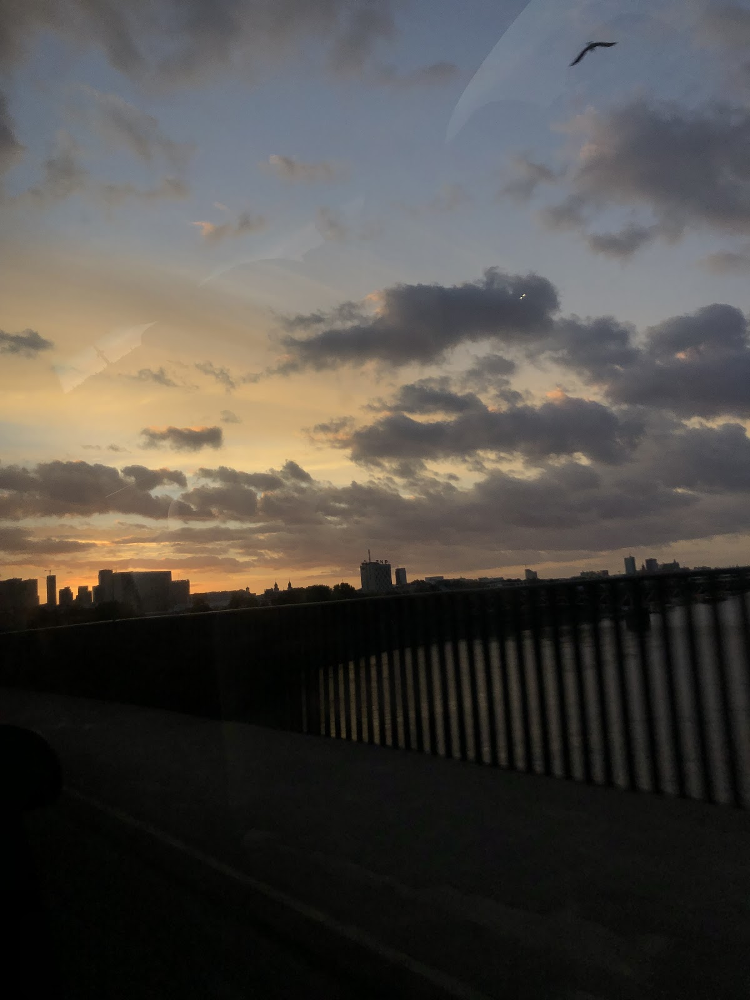 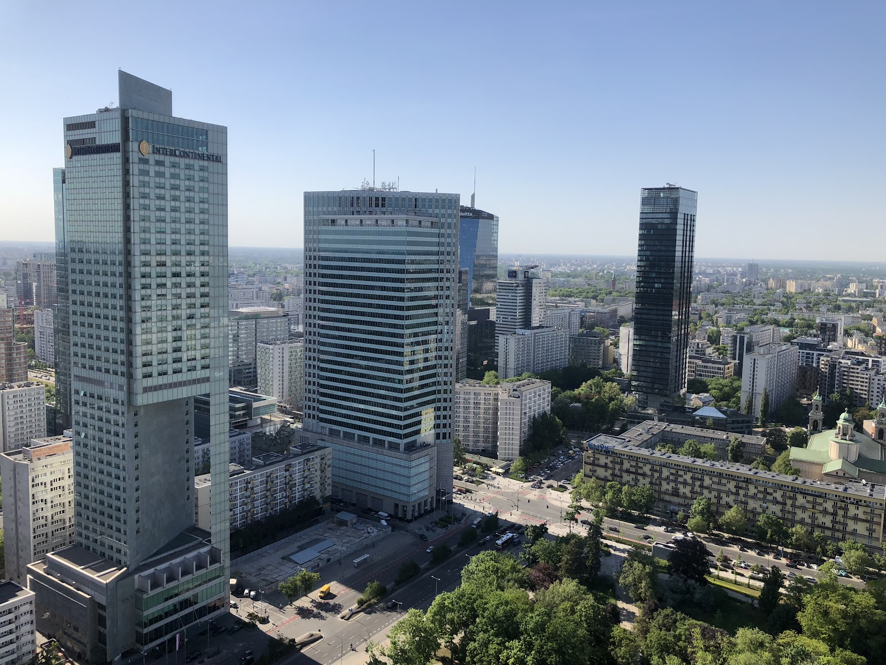 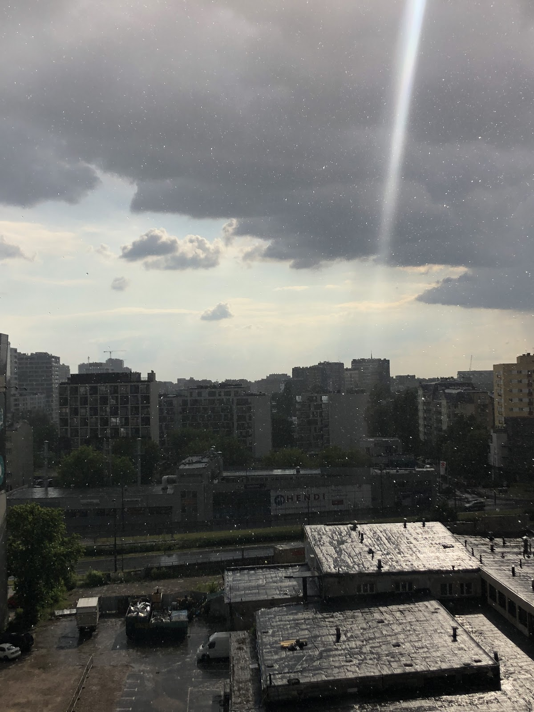I have moved to Cergy in September 2022 to study at ESSEC Business School. The city is located 40 minutes away from Paris so I often go there with my friends.
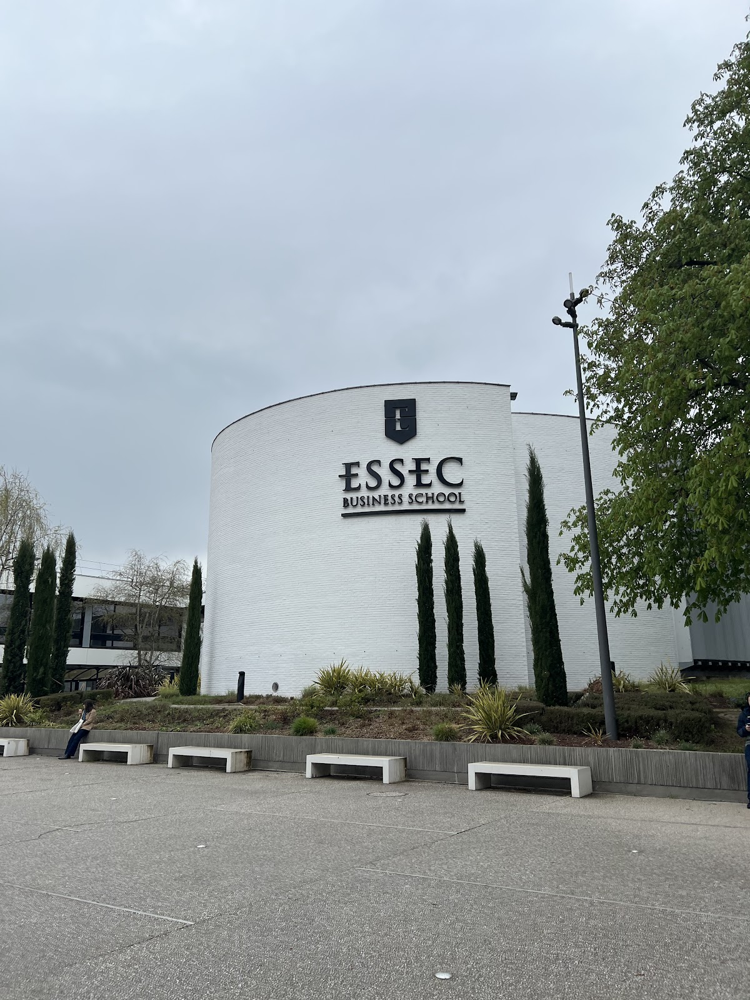 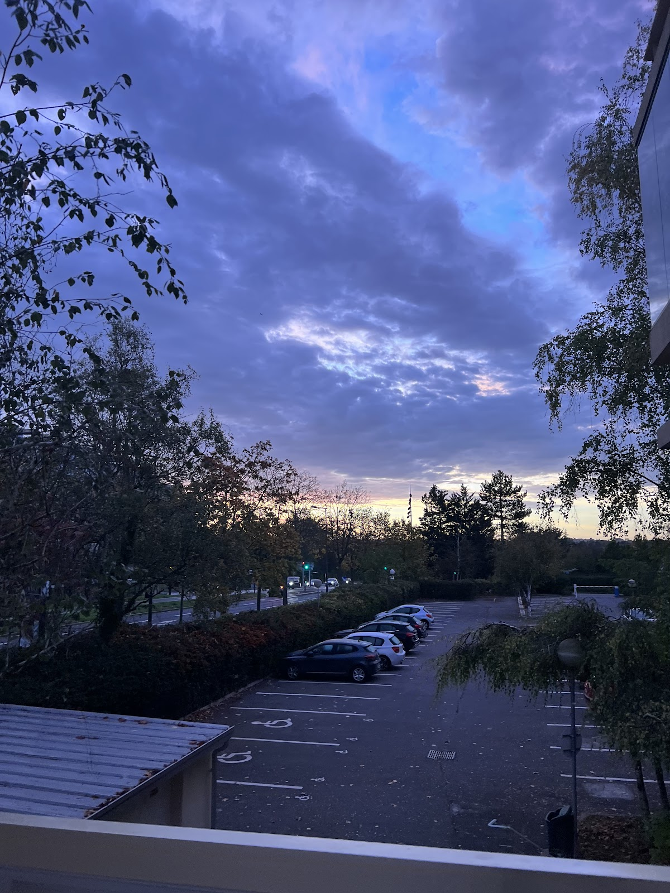 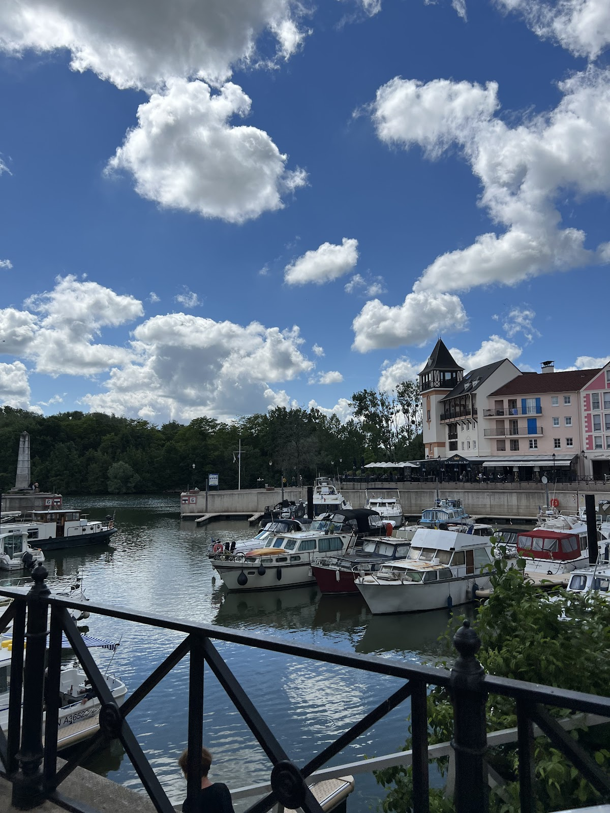I have been interested in music ever since I was young by pursuing musical theater, singing and guitar lessons. My dad has had a huge influence on my musical taste as a former DJ and I love learning about the history of music and discovering new genres. My favorite genres are alternative rock and musical theater.
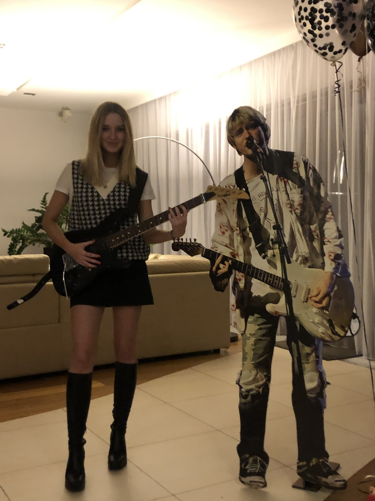I have traveled to 5 continents thanks to my parents and have visited over 30 countries. Over the past year I have traveled to Spain, Italy, Greece, Belgium and explored different parts of France.
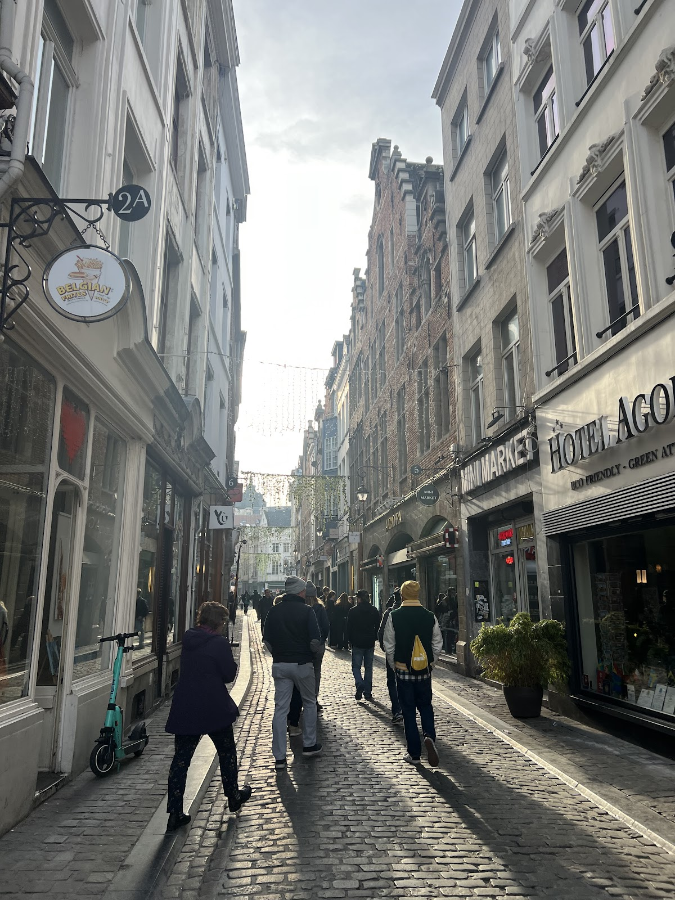 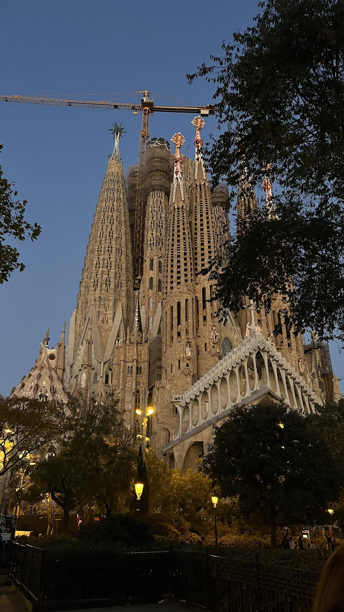 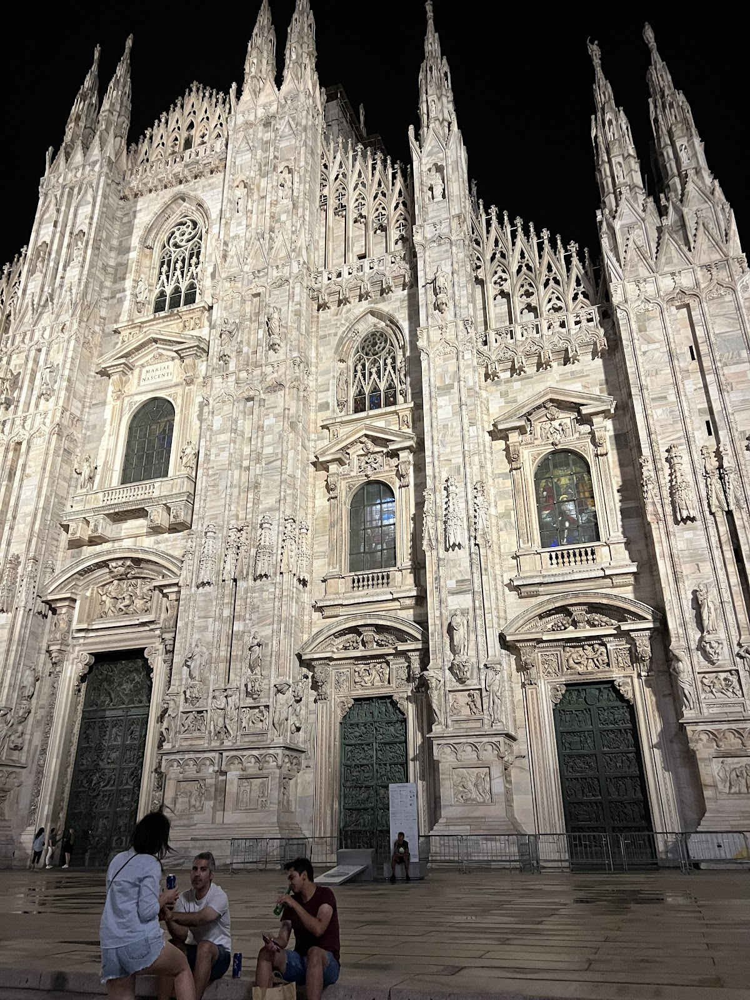I am a part of a travel association at ESSEC called Polo Marco where we plan trips abroad for other students to go on. This year we are planning a trip to Brussels and Lisbon in the upcoming school year. I was recently named the Head of Communications, therefore I take care of the association’s social media and image.
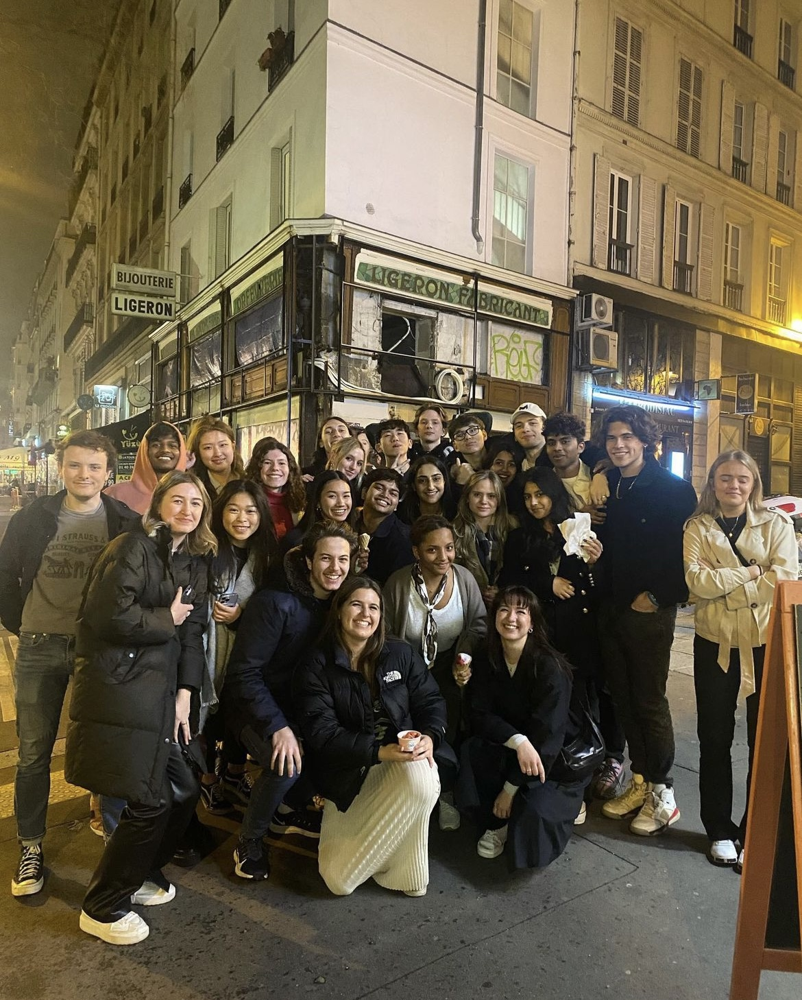